Standardmäßig werden, wenn aus einem Auftrag ein Teillieferschein erzeugt wird, Änderungen im Lieferschein was die Texte betrifft, in den Auftrag zurückgeschrieben.
Nachfolgend wird aufgezeigt, wie man einen Teillieferschein erzeugen kann, ohne die Texte im Auftrag auch abzuändern.
In der Belegerfassung ist am 01.03.2010 ein Auftrag mit einer Artikelposition und einem Text erfasst worden:
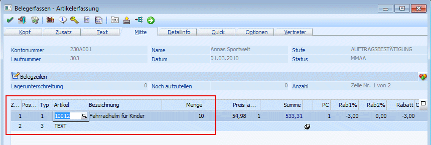
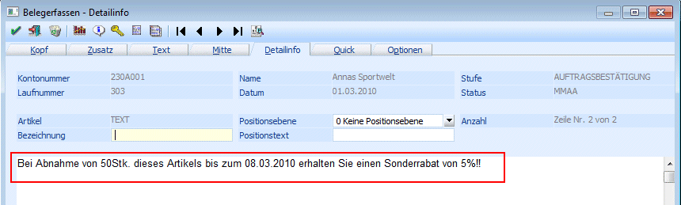
Am 08.03.2010 wird der Auftrag mit der Laufnummer 303 in einen Teillieferschein abgerufen. In der Belegmitte wird in der Artikelposition die Menge von ursprünglich 10 Stk. auf 5 Stk. verändert:
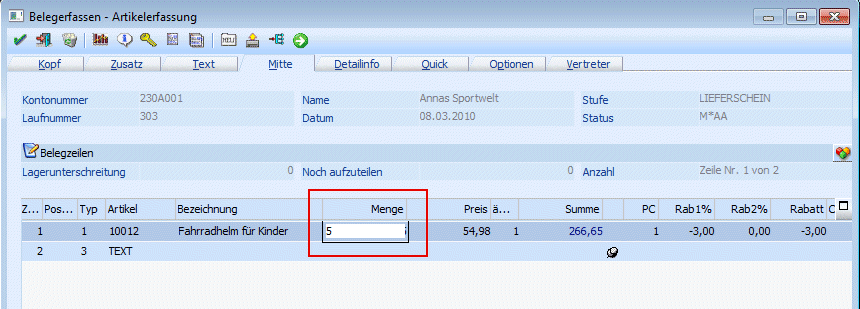
Anschließend wird mit Ok bzw. F5 bestätigt. Im Speichern-Fenster wird die Option "Rechnen und Editieren" aktiviert und mit Ok bzw. F5 bestätigt, weil der Textbaustein verändert werden soll und diese Änderung nicht in den Auftrag übernommen werden soll:
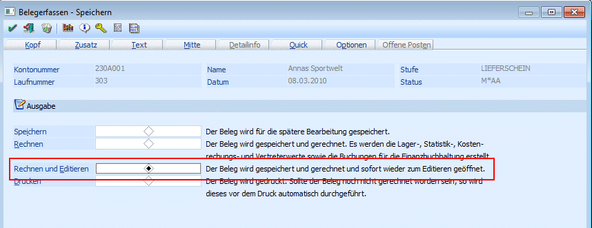
Im Hintergrund wird der Teillieferschein erzeugt und zum Editieren geöffnet:
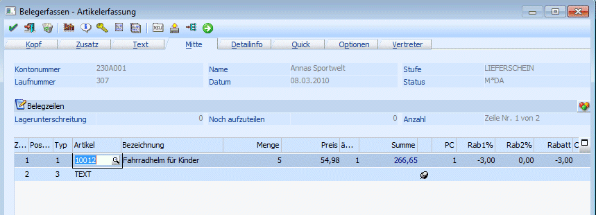
Der Textbaustein wird abgeändert: Die Option auf den Sonderrabatt soll bis zum 10.03.2006 verlängert werden:
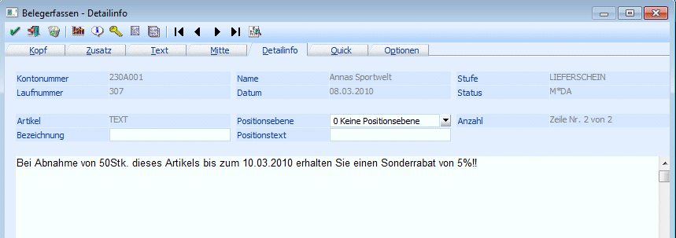
Der Teillieferschein wird mit dem geänderten Datum 10.03.2010 gedruckt:
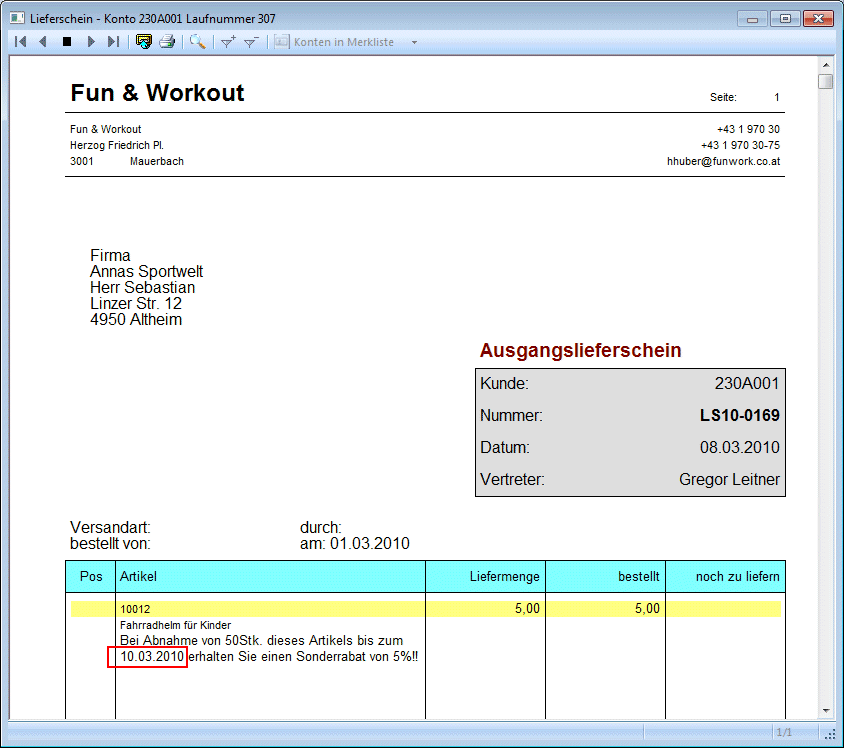
In der Belegerfassung wird der Auftrag mit der Laufnummer 303 editiert und der Textbaustein geöffnet. Hier steht weiterhin das Datum 08.03.2010, weil das im Teillieferschein geänderte Datum aufgrund der aktivierten Option "Rechnen und Editieren" nicht in den Auftrag übernommen worden ist:
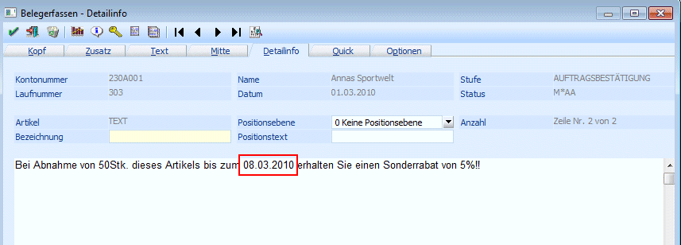
Im Telesales wird der Auftrag mit der Laufnummer 303 aufgerufen. Die Liefermenge wird von 5 Stk. auf 2 Stk. verändert:
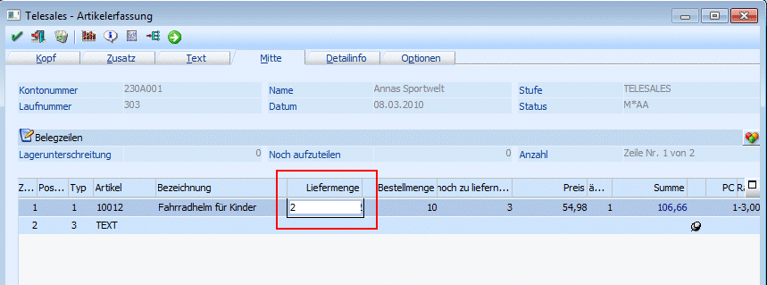
Anschließend wird mit Ok bzw. F5 bestätigt. Im Speichern-Fenster wird die Option "Rechnen und Editieren" aktiviert und mit Ok bzw. F5 bestätigt, weil der Textbaustein verändert werden soll und diese Änderung nicht in den Auftrag übernommen werden soll:
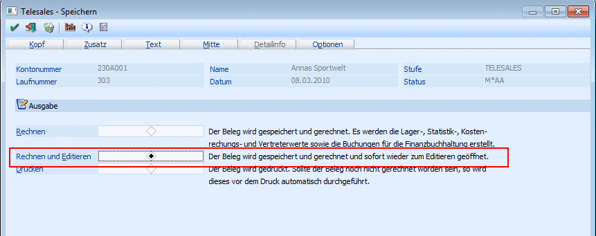
Im Hintergrund wird der Teillieferschein erzeugt und zum Editieren geöffnet:
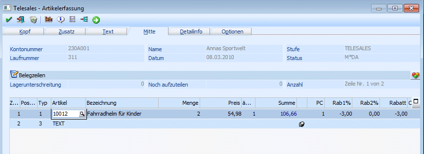
Der Textbaustein wird abgeändert: Der Sonderrabatt soll in diesem Fall statt 5% nur 3,5% betragen:
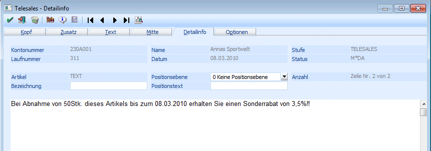
Der Teillieferschein wird mit dem geänderten Prozentsatz 3,5% gedruckt:
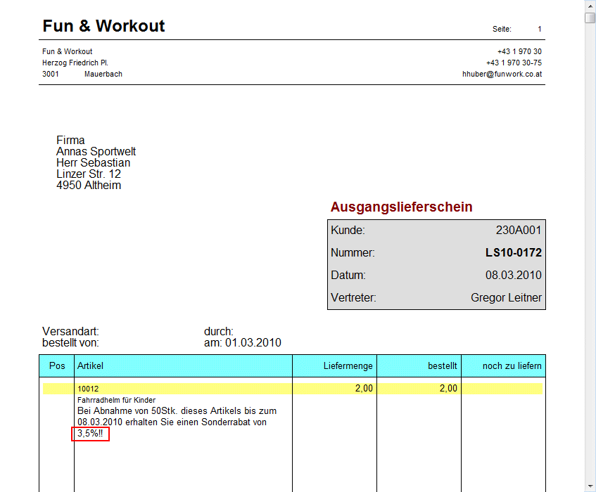
In der Belegerfassung wird der Auftrag mit der Laufnummer 303 editiert und der Textbaustein geöffnet. Hier steht weiterhin der Prozentsatz 5%, weil der im Teillieferschein geänderte Prozentsatz aufgrund der aktivierten Option "Rechnen und Editieren" nicht in den Auftrag übernommen worden ist:
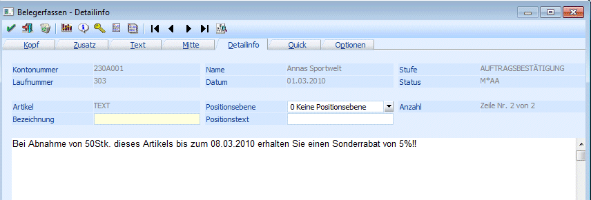